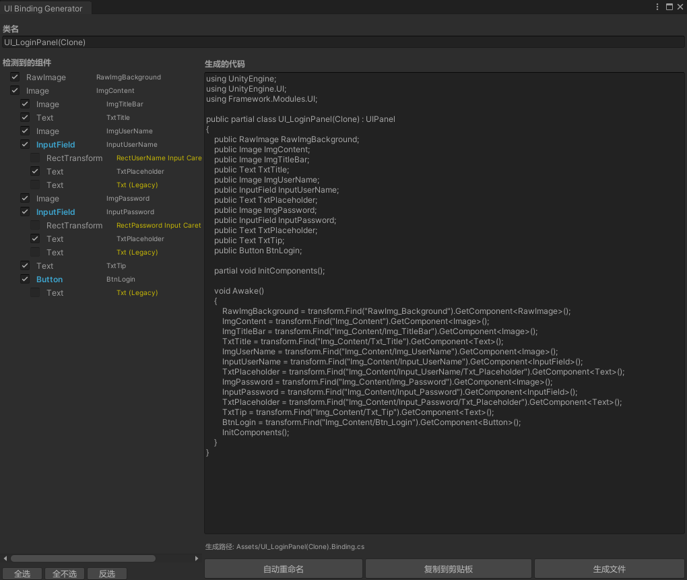
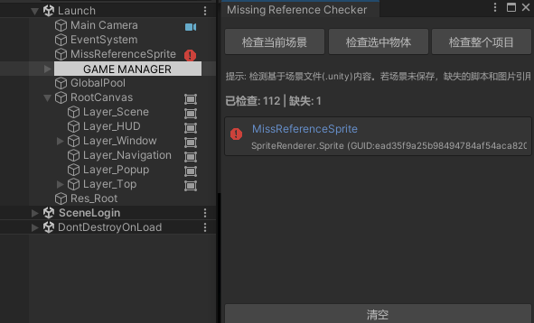

项目结构概览
Assets/Game
├── Launch.unity # 引导底座场景 (YooAsset初始化)
├── GameRes/ # 动态资源树 (受热更管理)
└── _Scripts/ # 逻辑核心
├── Main/ # [AOT层] 启动引导、HybridCLR热更驱动
├── Framework/ # [内核层] Framework核心与通用中间件
│ ├── Common/ # 跨平台核心逻辑 (Core, Utils)
│ │ ├── Core/ # Architecture, IOC, BindableProperty
│ │ └── Modules/ # 通用组件 (Config, Http, Res, UI, Pool, Timer)
│ └── Unity/ # Unity深度集成驱动
│ └── Editor/ # 工业化工具集 (UI绑定生成、分析器Overlay、引用检查)
└── Hotfix/ # [热更层] 核心业务逻辑实现 (C# DLL)
├── App/ # 全局架构驱动 (GameArchitecture, GameManager)
├── Procedures/ # 流程控制 FSM (Launch, Preload, Login, Main)
├── Shared/ # 业务共享定义 (Configs, DTOs, Consts, Utils)
├── Gateways/ # [通讯网关层] IServerGateway 抽象
│ ├── LocalServerGateway.cs # 离线模拟服务器驱动
│ ├── Controllers/ # [本地服务端逻辑] 模拟后端控制器
│ └── NetworkServerGateway.cs # 真实网络服务器 (HTTP/WebSocket)
├── Modules/ # 典型业务模块 (统一五层架构)
│ ├── Inventory/ # 背包系统 (增量同步/响应式字典)
│ ├── Shop/ # 商店系统 (限购逻辑/服务端同步)
│ └── ... # 其他系统模块
└── Gameplay/ # 核心玩法 space (独立子架构隔离)
└── Demo1/ # 卡牌自走棋演示
Tools/ # 外部工具链
└── ExcelExporter/ # 基于NPOI的自动化导表流水线
架构职责详述
[Assets/Game] 启动环境
- Launch.unity：框架点火场景，负责初始化 YooAsset 环境并引导后续流程。
- GameRes：分模块管理的动态资源仓库，支持资源热更与按需下载。
[_Scripts] / Main
负责热更 DLL 的加载注入以及 AOT 元数据的补充，是整个热更机制的起点。
[_Scripts] / Framework
Common (通用模块)
- Core：提供基于 QFramework 思想的基类及响应式数据绑定核心，实现数据驱动 UI。
- Modules (标准化组件)：UI、Res、Procedure/FSM、Network/Http、Config、Pool、Timer 等通用组件。
Unity/Editor (依赖UnityEngine)
- UI 绑定生成器：一键将 Prefab 节点映射为 C# 变量，省去手写引用。
- UI 性能分析 Overlay：在场景视图直接监测 Raycast 命中点与 Overdraw。
- 资源引用检查器：自动化扫描项目中的预制体丢失引用或异常。
[_Scripts] / Hotfix（动态业务区）
利用状态机维护从启动、预加载到登录、主页的游戏全局生命周期，并按模块组织业务逻辑。
Gateways（通讯网关实现）
- IServerGateway：屏蔽底层协议差异的统一调用入口。
- LocalServerGateway：内含本地数据库与控制器的离线模拟服务器。
- NetworkServerGateway：用于线上环境的生产级别网络请求网关。
Modules（典型业务模块）
按 Model-Service-Syncer 分层：Model 数据驱动 UI，Service 提供操作，Syncer 对接后端增量更新。
- Auth：登录、注册与 Token Session 维护。
- Inventory：支持增量同步、响应式字典与道具操作。
- Shop：限购逻辑、货币核销与商品刷新策略。
- Player：体力、等级等基础属性的数据同步。
- Mail：完整业务闭环（含领取附件）。
Gameplay（玩法空间）
- Demo1：模仿《大巴扎》的卡牌自走棋原型演示。
生产力工具集
- ExcelExporter：导表工具，支持 JSON 导出与全量结构验证。
总结
本框架参考 QFramework 的核心分层与 BindableProperty，Main（AOT）负责系统设置与资源更新后加载 Framework/Hotfix（业务）， 基于 YooAsset 与 HybridCLR 实现资源与代码热更新，适用于商业中小型游戏开发。
附录
UI 绑定

引用丢失检查
